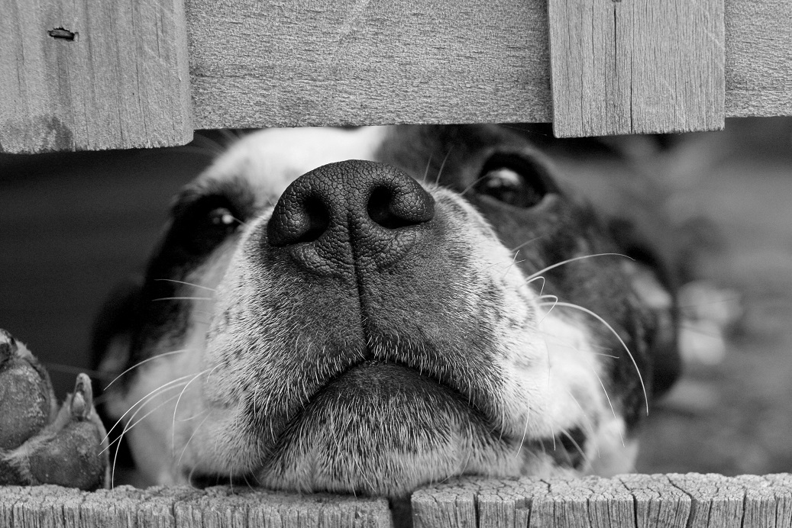

Programa de Adopción Responsable

Transformando el abandono en amor.

Patas sin Fronteras es una organización sin fines de lucro dedicada al rescate, recuperación y reubicación de animales abandonados. También impulsa campañas de concientización sobre tenencia responsable, esterilización y prevención del maltrato animal.
Proteger y mejorar la calidad de vida de animales en situación de abandono, promoviendo la adopción responsable y la educación sobre el bienestar animal.
Construir una sociedad donde todos los animales sean respetados, protegidos y tengan un hogar digno